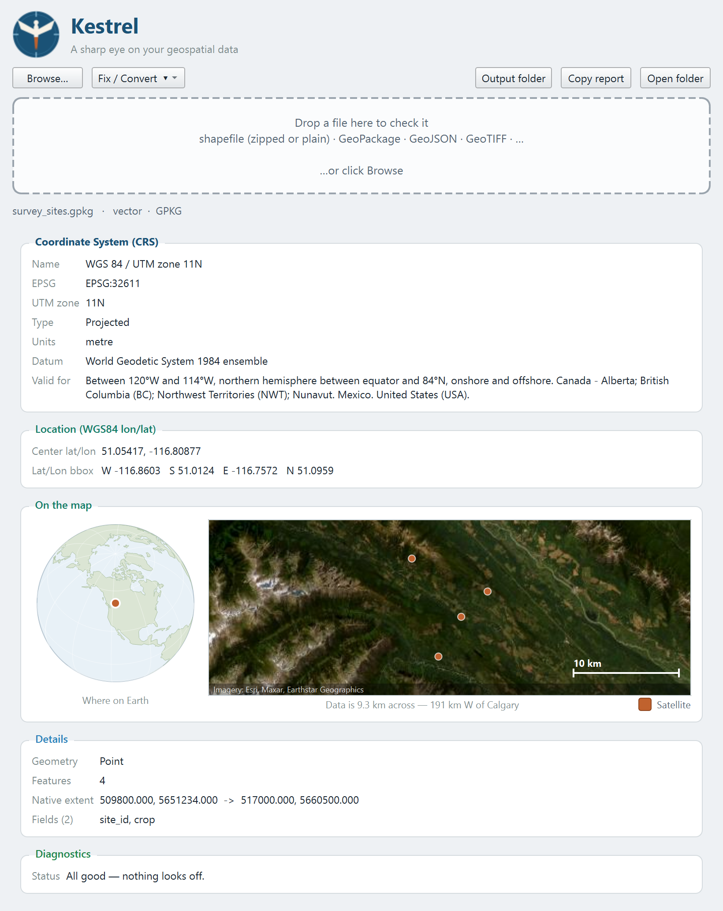

A sharp eye on your geospatial data.
You dragged a layer into QGIS and nothing showed up. Drop the file on Kestrel instead — in a second you'll see its CRS, UTM zone, real-world location, and exactly what's wrong.
Most "missing" layers come down to a missing or wrong CRS, an empty file, or coordinates that don't match the projection. Kestrel spots all of it.
Everything you need to sanity-check a file before (or instead of) loading it in QGIS.
Name, EPSG code, UTM zone, projected vs. geographic, units, datum — the headline answer, front and center.
The extent reprojected to lat/lon, so you can confirm the data actually lands where it should on Earth.
Missing .prj, CRS/coordinate mismatches, empty layers, Null Island, data outside the CRS area — flagged with fixes.
Zipped or plain shapefiles, GeoPackage, GeoJSON, KML, and GeoTIFF and other rasters. Just drop it in.
Drag a file onto the window — Kestrel reads the metadata instantly, without loading the geometry.

A free download for Windows. Pick the installer for the smoothest setup.
Grab KestrelSetup.exe (installer) or the portable zip from the latest release.
Run the installer (no admin needed) — it adds a Start-Menu shortcut. Or unzip and run Kestrel.exe.
Drag any geospatial file onto the window. That's it.
The app is unsigned, so Windows SmartScreen may warn on first launch — choose More info → Run anyway. Source and build instructions are on GitHub.